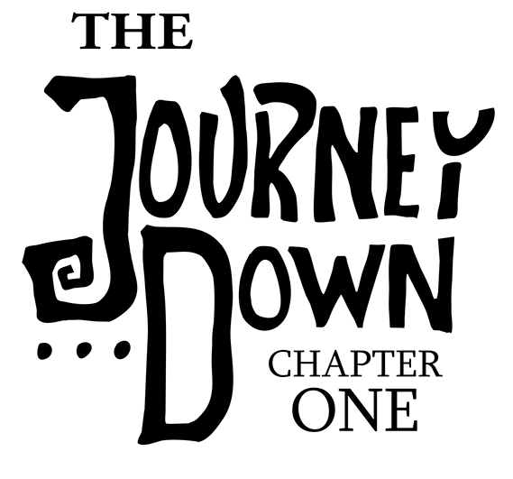
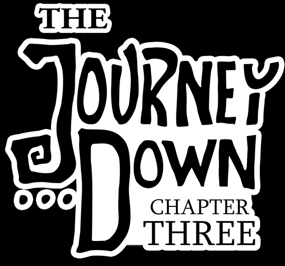

Main Cast
Cassie EwuluDavid Dixon
Anthony Sardinha
Additional Cast
Anabelle BayRobert S Benjamin
Edward Day
Miranda Gauvin
Rick McNeil
Patrick Seymour
Scott Stoked
Alex Thomas
Edwyn Tiong
Jason Vertucio
Art
Henrik EnglundTheodor Waern
Code
Mathias JohanssonMarkus Larsson
Music
Simon D'SouzaTesting
Ludvig ArwidssonTim Bendrin
Ben Chandler
Agustin Cordes
Tamara De Paus
Christofer Falkman
Erik Gabrielsson
Nimish Gautam
Marina Grahovar
Richard Gunn
Caroline Gustafsson
Charlie Hartlid
Emanuel Högberg
Christian Jannesson
Christian Johansson
Kaj Leissner
Gustaf Lindblad
Robert Megone
Ivan Mogilko
Robin Nilsson
Martin Olausson
Alexi Rivera
Alan Said
Christofer Svedjeby
Ryan Timothy
Arjon Van Dam
Anders Wallmark
Thanks to
Ulrika AgetunDaniel Edvall
Natalie Ekstedt
Tord Englund
Robert Englund
Thomas Elf
Tindy Hellman
Marco Ivarsson
Andreas Jönsson
Chris Jones
Tobias Kask
Jakob Larsson
Liam Markham
Emil Meiton
Adam Rehal
Fredrik Ågerup
The Journey Down makes use of the following libraries:
AngelscriptAppirater
FreeType
Glew
GLFW
GLM
libjson
libogg
libvorbis
libtheora
libtheoraplayer
libwebp
OpenAL Soft
libpng
zlib
A big THANK YOU to to everyone involved in these excellent libraries!
The Freesound Project
AGFX AMPUL Arctura Bansemer Benboncan Bram BristolStories Calethos Ceacy Connum Corsica_S DJ Chronos DaveGould Digital System DrNI ERH Erdie Freed FreqMan Goldy-sama Halleck HerbertBoland Incarnadine JonathanJansen Jovica KGJones KRAFTWERK2K1 Koops LG Luftrum Microscopia Mister Softy NoiseCollector Percy Duke Pfujimoto PhreaKsAccount Pogotron Q.K. RHumphries ReadeOnly RealRhodesSounds Robinhood76 RutgerMuller Simon_Lacelle Sruddi1 Stickinthemud Stomp SuGu14 SunnySideSound SuperDaveOsbourne Syna-Max THE_bizniss TwistedLemon UncleSigmund VEXST WIM Walter_Odington Wolfsinger acclivity acutescream adcbicycle aesqe alikirodgers alister667 amabok batchku bebops beerbelly38 burnttoys buzzbox cajo cbakos cfork cognito perceptu conny crk365 csengeri datasoundsample daveincamas delphidebrain digifishmusic djgriffin dobroide duckboy80 eliasheuninck engreitz eric5335 eruk farbin fonogeno freesound fresco gelo_papas genghis attenborough gezortenplotz gim-audio greysound han1 hanstimm harri hello_flowers ice9ine ignotus inchadney info@in-tune.nl ingeos james duckett jnr hacksaw jobro junggle kathol kerouacsamerica kjackson KorgMS2000B kwazi laurent levinj lgarrett ljudman lonemonk loofa luffy markystar martypinso megamart melack mich3d mikaelfernstrom milo mystiscool nathanprtII neonaeon nkuitse nofeedbak nthompson oniwe patchen pcaeldries pfly plagasul prico prosounder pushtobreak reinsamba rockdoctor roscoetoon sagetyrtle samplecat sandyrb sanitysource sanus_excipio sazman schluppipuppie scuzzpuck shewbox shoodas simondsouza sirplus spt3125 stijn sukaton suonho swelk thanvannispen thedialogueproject themfish timdrussell tombola tomcat9uk tweeterdj vibe_crc vixuxx volivieri vtkproductions.com willpio wisslgisse zerolagtime zeussMain Cast
Anthony SardinhaCassie Ewulu
David Dixon
Additional Cast
Kamran NikhadMartin Billany
Joshua Tomar
Julisa Rowe
Alex Thomas
Marianne Miller
Robert S. Benjamin
Pete Donaldson
Owino Sangiewa
Sandra Beckles
Malcolm Ray
Ras Tonto
Edwyn Tiong
Jennifer Kanari
Renee Makau
Gibson Ndaiga
Peter Willington
Maja Waern
Art
Henrik EnglundTheodor Waern
Code
Mathias JohanssonAdditional art
Emanuel HamiltonAdditional code
Markus LarssonMusic
Simon D'SouzaJamie Salisbury
Featuring performances by
Straight No Chaser
Jim CheekStraight No Chaser
Ali Helsby
Alex Bondonno
Russ Holdsworth
Kate Fish
Chris Peryagh
Nick Trish
Jon Brown
Martijn van Galen
Bob Turner
Peter Bryan
Tim Wade
Paul Nieman
Dave Macari
Nick Brion
Dave Beebee
Sam Arts
Marianne Windham
Noel Joyce
Additional SFX
Analog/Digital UnionRecordings at Ono One Studio
Steve WaweruEarly testing heroes
Robert MegoneErik Jakobson
Jörgen Niemi
Tim “Timmpann” Bendrin
Emil Gudmundsson
Per Anders “Poke” Östblad
Hampus Ershagen
Mikael Frosthage
Tobias Kask
Nimish Gautam
TJD2 QA TEAM
Nicklas GummessonJohan Emilsson
Jonas Ådahl
Leo & Bruno Lapinski
Ernst Holm
Ludvig Arwidsson
Joe Davison
Tim Hengeveld
Sam Schultz
Nikos Patsiouras
Michael Yogev
Anni Hatzimilti
Gustavo "Solowi" Nakandakare
Ben Chandler
Kevin Becker
Josh "Cheeseness" Bush
Josh Pipe
Daniel Belohlavek
Charlie Nash
Pål Sveningson
Jon Warghed
Kaj Leissner
Joakim Bergström
Charlie Hartlid
James Barrett
Leonard Challis
Sebastian Scaini
Balázs Gimes
Brian Manown
Allan Orheden
Thanks to
Krešimir ŠpesAndreas Eriksson
Vägen ut!
Anthony Rocha
Peter Andrén
Natalie Ekstedt
Susan D'Souza
Anders Johansson
Carl Blom
The Journey Down makes use of the following libraries:
AngelscriptAppirater
FreeType
Glew
GLFW
GLM
libjson
libogg
libvorbis
libtheora
libtheoraplayer
libwebp
OpenAL Soft
libpng
zlib
A big THANK YOU to to everyone involved in these excellent libraries!
The Freesound Project
7by7 ACorcuera AdamWeeden Audionautics BMacZero Bansemer BeatsbyCasper Benboncan Bernardomatasoto CGEffex Cheeseheadburger CkSned Corsica_S Cyberios Dave Welsh DeantheDinosauce Dinsfire E-Audio ERH Eelke Enok123 EverHeat Ferdinger Fight2FlyPhoto Framing_Noise FreqMan FunnyMan374 Glaneur de sons Gniffelbaf Goup_1 Halleck Heigh-hoo HerbertBoland Hitrison Huggy13ear Huminaatio Iberian_Runa Jace JarAxe JasonElrod JoelAudio JohnsonBrandEditing Jon285 JuanMartos KNO SFX Kayyy KeyKrusher LampEight Leady Leandros.Ntounis LloydEvans09 MultiMax2121 NenadSimic NoiseCollector Ohrwurm OtisJames PTSPProductions Philter137 Pooleside Q.K. Rmutt Ryding S. Dedalus Sauron974 ShotgunPicker Slanesh Snapper4298 Taira Komori Tomlija TwistedLemon Werra Woodingp afterguard alienistcog argos22 audible-edge barrigan bcginn bone666138 burkay cameronmusic captainPugwash club sound cmusounddesign cower davidferoli davilca deraj dobroide domrodrig dtracy10 duckduckpony eduardfrigola eliasheuninck escortmarius f4ngy ftpalad gerardcatala guitarguy1985 hy96 iluppai inchadney ingolyrio j1987 javetakami jivatma07 jjhouse4 jmjeffries2 jobro joedeshon jorickhoofd juskiddink kMoon kantouth kathol kingsrow klangfabrik klankbeeld kyles lolamadeus lonemonk m1a2t3z4 marcel_farres masterwingpow mattbronka matucha monnie101 musicmasta1 mystiscool nebulousflynn ngruber niwki njabrams njazzz ondrosik oymaldonado p3n10 pillonoise plingativator potentjello profdrums pwausc1 qubodup reinsamba rh2yfreesound ripper351 runirasmussen sangtao santino_c sarge4267 sinewave1kHz skinnytecboy soloan sonoplastico soundscalpel.com suonidigenova swiftoid szalonegacie tec studios thedapperdan timgormly ultradust unfa vibe_crc vonfleisch wildweasel wilhelmus1959 woodmoose xavimuse xenognosis

Main Cast
Anthony SardinhaCassie Ewulu
David Dixon
Additional Cast
Gabby NisticoDavid Fennoy
Robert S. Benjamin
Miguel Moran
Jordan Haro
Miranda Gauvin
Joshua Tomar
Edwyn Tiong
Lucas Schuneman
Marianne Miller
Lani Minella
Anairis Quinones
Jennifer Kanari
Nellie Johansson
Jay Britton
Martin Billany
Sandra Beckles
Theodor Waern
Trendane Sparks
Ras Tonto
Music
Jamie SalisburyFeaturing performances by
Simon WillescroftJake Willson
Chris Storr
Dave Marks
Andy Findon
Jessica Diamond
Darby Todd
Accy Yeats
Simon D’Souza
Horns recorded by Taz Mattar at Cavendish Studio
Mixed by Rich Aitken at Nimrod SoundAdditional music by Simon D’Souza
Art & Story
Theodor WaernAnimation, Rigging & Character Scripting
Henrik EnglundCode & Story
Mathias JohanssonAdditional Art & Animation
Nellie JohanssonAdditional Code
Alexander B. Christof - Black Belt GamesSFX
Jannik ReuterbergGame Engine
Markus LarssonLocalization
Thomas Faust - IndieGameTranslationsEarly testing heroes
Mikael FrosthageJohan Westlund
Jonas Innala
Jake Catrall
Joakim Johansson
Pontus Lindgren
Sander Brauwers
Accel Sjöström
Mårten Jonsson
Testing
Leonard ChallisJonas Ådahl
Josh Pipe
Charlie Hartlid
Joakim Bergström
Tobias Kask
Michael Yogev
Nikolaos Patsiouras
Emil Gudmundsson
Sri Narasimhan
Ernst Holm
Balázs Gimes
Brian Manown
Jörg Spelthahn
Bruno Lapinski
Tim Hengeveld
Carl Lorin
Michael Hartmann
SvenQ
Kevin Becker
Gustavo “Solowi” Nakandakare
James Barrett
Cheese
Pål Sveningson
Tim Bendrin
Sam Schultz
Kaj Leissner
Calle
Emil Gudmundsson
Ludvig Arwidsson
Max Friberg
Frank Gharibnavaz
Thanks to
Krešimir ŠpesKatarina Olsson
Carry Castle
Flaimbait Games
Pathos Interactive
Kirikoro Games
Maria Hådén
Kålis
Lou Salisbury
Putte & Klaus
The game incubator
Arvid Nygren
Kickstarter Backers
BigDSven Oesterle
Jimmy Hermansson
Anders Carlsson
Wouter van Leeuwen
Paskarl (k0SH)
Martin Ottowitz
Stuart Feldhamer
James Alexander Green
Daniel Johnson
Graham
J
Abdulaziz AL-rabiah
Edwyn Tiong
Gregory MacLean
Trenton Wynter Brown
Brent Pissoort
Joshua
Cynthia Gary
Sri Narasimhan
nottoobadthanks
Allan Orheden
Climbingstars
Christian
BIOCHEM1STRY
Overmann
Erik Olsson
Thierry BARD
cpass
RonE
David Colli
Erik Gabrielsson
Emmanuel Aranda
Visa | Tormented Dreamgoat of Eternity
Husam Alkhatib
Henrik Jonsson
Wessel
James H.
Christoffer Enedahl
brosgetstoked
Fredrik Tedgren
Steven "Blackthorne" Alexander
Ingo Günther
Mathias Wahlin
Alexander Birke
snarky
Maarten van Minnen
Pedro Timóteo
Eliel
Marco
Fabian Scherschel
Thomas Zilling - Tormented WoOS of OOoE
WhiteRakogis
Lewarcher
Daniela Cau
Kim Follaug Walestrand
Serena Nelson - Hero of the AGRM
Mikael Forslind
epmode
Andreas Backman
Omri Fima
Jan Kavan
Riggo
Lake Kubilius
Jarkeld
Johannes Gotlen
Petter Sjölin
Gene Mocsy
Olle Håkansson
Mat
Istenes
Utritum
Tim Georgic
David Tavakoli
Brian Levinsen
Anthony Ryan Peterlin
Tim
Lukas Daniel Klausner
Howard Kistler
Jonatan Hägglund
Eric Polley
Brian Connors
martiz
Lars Hahus
suzanne
Aspartza
Erebos
Paul Firth
Omar Abul
Andreas Bergqvist
Alex Brem
Marcel Pegel
Daniel Z. von Gertten
Rob Wells
Miranna
Arkadiusz Piekarz
Zoltan Ujhelyi
Kelat
Quentin Lancelot Fagan
Scott Bone
Words Of Magic
Arno
Skyl---
Mad-Zquirrel
Lili Soh
Jacob Evans
Joseph Bradley
Karen Brigitta Goetz
Soulroar
Robert Potter
aeon.x
GamerXD8
kicklix
Vidya
Brigitte Leili
Lars M Olsson
Thomas Schryver
Michele kelly
Paul Koerber
hchris1
Vicky Barrett
Wybe Janssen
Andreas Röver
Hurtz
Christian Smith
Jason Kwong
Taint
Matt Hargett
Mobin Khalid (Mobin1)
deanone
Silverai
Gustaf Lindblad
giom
tvest
Nikos Patsiouras
Kristoffer Andersson
Christof Schmid
Sören Boelke
Andy Durrer
Sandrine N
firesock
Ruben Andre' Breiseth
Daniel Hall
Walden Lechner
Diana Calder
Ryan Seney
Eric P. Kurniawan
Billy
Mike D
Dezponia
Jezariael Demos
Åsa Modén
nodata
Eelco van Dam
Sascha Fichtner
Matt Dawson
Codlefish
Krystal Bohannan
Mike G. Melanson
S.D.
Olivier ARON
Jacob Ceder
Yitcomics
gehkadl
Brian Dysart
Roland Speith
infangec33
IdleDice
Max Gibson
Claire Cheong
Eva Sandberg
Wayne Sung
Rolf Scheimann
Laserschwert
Mikko V
Jürgen Peters
Knight of Words
Herman Duyker
Colin Glover
Cheeseness
Michael Hartmann
Robert Megone
Ahenobarbus
Baldur Brückner
JFA Jansen
RockyBoulder
Ottar Pehrson Skiden
marina
al campbell
Anders Christiansson
Niclas Nygren
Peter Färberböck
Duncan Sample
Axel Kothe
A.A - The Dream Travelling Echidna $6.13
alp aziz torun
Imageform
Fergus Neff
Noirin Carmody Order Of The Goat
Pernilla Eriksson
Fredrik Eriksson
Dianne Phipps
Anja "Cha!" Schulz
Kevin Roberts
Torbjörn Andersson
christian
Anton
pabbajita
Necrosis Thanatos
Daniel Scharrer
Erich Hoover
xrror
Daniel
Alessandro Sturniolo
Sebastian Lange
Alex Peters
VonVentrue
Liam Duffy
Noaksey
Millenia
Myrddin Starfari
Samuel Klein
Jhonny Sjöstrand | All-Seeing Crow
Jonny Blackburn
Massimo Capulli
Thomas Philips
Samuel Frederick
Zainah Alrujaib
DuelingG
Martin Mulrooney - Order of the Goat
Randy Pratt
David Sondermann
Simo-Pekka Metsävainio
Lorraine Crichton
Marc7454
ipfreaks
Pix
Jens Restemeier
Mike Breitkreutz
Alexander Kaasjager
Simon Wictorsson
Giacomo Bergamo
Calle
Erik-André Mamen
wormingdead
Stan Radtke
Jay V
Johan Emilsson
Scott
Pomax
Peter Willington
schmankerl39
Tobias Maack
TVB
TheresaW
Bodenand
Janina Brünner
Markus Bisinger
VoodooFX
Brian K. Olsen
Åsa Frändemark
Markus Larsson
Signe Rocklin
Peter Edström
Ricardo
Per Lindstrand
Danny Boezelijn
Roberto Sosa Cano
Kjell Nilsson
Bunny
József Sebestyén
akaDK
Chris Tholen
Tobias Kask
Kurt K
Vêbbô
yama
Andreas Wikensjö
The Journey Down makes use of the following libraries:
AngelscriptAppirater
Crashlytics
FreeType
Glew
GLFW
GLM
libjson
libogg
libpng
libtheora
libtheoraplayer
libvorbis
libwebp
OpenAL Soft
PushWizard
zlib
A big THANK YOU to to everyone involved in these excellent libraries!
The Freesound Project
0ktober 3863 7by7 A43 ACorcuera Abyssmal Adam_N Aiwha Akc1231 AlienXXX Anton Archeos Argitoth Audionautics Augdog Autistic Lucario BMacZero Bansemer BeatsbyCasper Benboncan Bernardomatasoto Bertrof Black Boe Blackie666 Bram CGEffex Ch0cchi Cheeseheadburger CkSned Claudius Corsica_S CosmicEmbers Cyberios DANMITCH3LL Daav Dasgoat Dave Welsh DeantheDinosauce Diboz Dinsfire DrMinky Dvideoguy Dynamicell E-Audio EFlexTheSoundDesigner ERH Eelke Emata7890 Enok123 Erdie EverHeat Fight2FlyPhoto Fontaine12 FractalStudios Framing_Noise Freezeman FreqMan FunWithSound FunnyMan374 GFL7 GeronimoGeronimo Glaneur de sons Gniffelbaf Goup_1 GowlerMusic Greencouch GryffDavid Halleck Halph-Price Hanbaal Heigh-hoo HerbertBoland Hitrison Huggy13ear Huminaatio Hybrid_V IFartInUrGeneralDirection Iberian_Runa Incarnadine InspectorJ JOHNWALLY Jace Jack_Master JakLocke JarAxe JasonElrod JavierZumer JillianCallahan JoelAudio Johnc JohnsonBrandEditing Jon285 Jovica JuanMartos Julien Matthey Julien Nicolas KBarbie KNO SFX KaiLietzke Kaiho Kayyy KeyKrusher Kijadzel Kodack KorgMS2000B LG LampEight Leady Leandros.Ntounis LegoLunatic LittleRobotSoundFactory LloydEvans09 Luftrum Manwe MattJ99 Matt_G Mittelmorder Mixedupmoviestuff MultiMax2121 Nathan_Lomeli NenadSimic NoiseCollector OK8 Ohrwurm Omar Alvarado OtisJames OwlStorm PTSPProductions Pedaling Prince Philter137 Planman Pogotron Pooleside ProjectsU012 Q.K. RHumphries RICHERlandTV RSilveira_88 RTB45 ReWired Rmutt Robkinsons Rock Savage RutgerMuller Ryding S. Dedalus Samgd14 Sauron974 ScarKord Sevin7 ShotgunPicker Sir Smith Slanesh Snapper4298 SpliceSound Starvolt StevenBrown Streety Synapse THE_bizniss Taira Komori TenbuKan TicTacShutUp Tomlija Tritus TwistedLemon Two13 UncleSigmund ViaTorci VincentM400 Walter_Odington Werra Werunos WillHiccups Woodingp X172 Yuroun Zabuhailo aaronsawyer1 adcbicycle aesqe afterguard agnelowayne ahill86 alienistcog altfuture analogchill argos22 artifact astrand audible-edge barrigan bcginn bdunis4 benjaminharveydesign bennychico11 billyzenn bmusic92 bone666138 bruce965 burkay buzzbox cameronmusic captainPugwash catskinroyale chripei cliftonmcarlson club sound cmusounddesign cognito perceptu cower csargent9 csengeri csproductions cumesoftware cydon darkadders daveincamas davidferoli davidkyoku davilca deleted_user_3277771 deraj digifishmusic dkudos dland dobroide domrodrig dotY21 doxent dtracy10 duckduckpony eduardfrigola edwin_p_manchester eliasheuninck elonen ermfilm escortmarius esperar f4ngy farbin fastson fauxpress felix.blume fille1000 fins flag2 fogma ftpalad gelo_papas gerardcatala gezortenplotz godspine goose278 grunz guitarguy1985 haldigital97 hazure hello_flowers hendmik hinzebeat hy96 hykenfreak iluppai inchadney inco9 ingolyrio irrlicht j1987 jason01234 javetakami jimsim jivatma07 jjhouse4 jmjeffries2 jobro joedeshon jorickhoofd jrssandoval junggle junkfood2121 juskiddink kMoon kantouth kathol kbnevel kellyconidi kingsrow kklab5050 kkz klangfabrik klankbeeld kwahmah_02 kyles laribum lawnjelly levite_sound lgarrett lolamadeus lonemonk luffy m1a2t3z4 magedu maisonsonique malexmedia man marcel_farres martian marvman masterwingpow mattbronka matucha mcpable medialint megmcduffee mickdow mikala_oidua mike campbell mikobuntu mistorcaveman monnie101 music.boy musicmasta1 mw_1984 mystiscool nattomac nebulousflynn newagesoup ngruber nicStage nick121087 niwki njabrams njazzz nmgproduct noirenex nsstudios offthesky olver ondrosik opm orehek oyenstikker oymaldonado p3n10 pacomav paespedro pagancow pboix pempi peridactyloptrix pillonoise plasterbrain plingativator potentjello profdrums pwausc1 quartertone qubodup reinsamba reznik_Krkovicka rh2yfreesound ripper351 robotjay rodincoil ruidostudios runirasmussen sagetyrtle sangtao santino_c sarge4267 sazman sbarncar schluppipuppie sdfalk simon.rue simonjeffery13 sinewave1kHz sityu skinnytecboy slothrop snowflakes soaper soloan sonoplastico sophiehall3535 soundrecorder7 soundscalpel.com spanrucker splashzooka stomachache stosht str4ngS suonidigenova swiftoid szalonegacie tc630 tec studios thatjeffcarter thearxx08 thedapperdan theshaggyfreak tia666 timgormly tmkappelt tommccann transitking tweeterdj uair01 ultradust unfa unreadpages vibe_crc vonfleisch wadaltmon wildweasel wilhelmus1959 woodmoose xavimuse xenognosis xinaesthete xserra zaneclampett